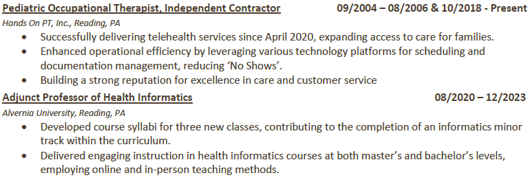
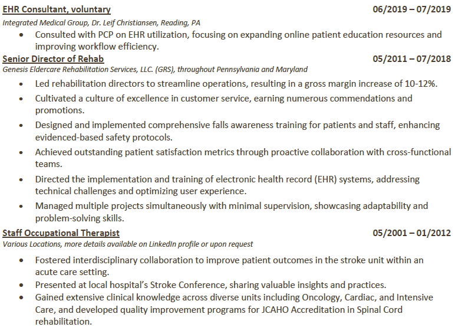
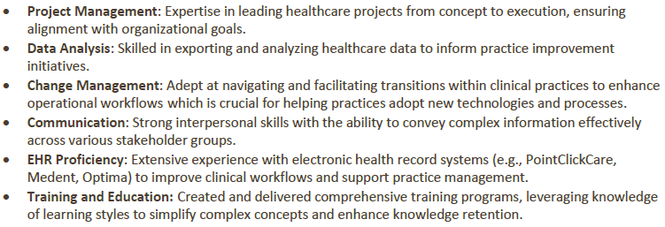

Christine Ahrens Resume
Summary
Results-driven healthcare professional and occupational therapist with over 20 years of experience spanning clinical practice, rehabilitation management, and health informatics. Proven ability to leverage technology to drive practice transformation, improve patient outcomes, and enhance operational efficiency. Expertise in designing and implementing user-friendly documentation systems, coupled with exceptional interpersonal skills including salesmanship, coaching, and a commitment to customer service. Currently pursuing advanced technical training with the goal of developing an innovative documentation system for Early Intervention (EI) services that empowers clinicians and streamlines workflows.
Education
- Master of Science in Health Informatics from The University of Scranton in 2019
- Outstanding Academic Award Recipient.
- Elective: Change and Project Management.
- Graduated Summa Cum Laude.
- Informatics Analyst Intern at Keystone Health Information Exchange, Danville, PA
- Informatics Solutions Volunteer Intern at Edward J. Leahy Center Clinic, Scranton, PA
- Analyzed workflow to author a detailed gap analysis of current EHR.
- Conducted on-site interviews with key users.
- Bachelor of Science in Health Science from Alvernia University in 2000
- Bachelor of Occupational Therapy from Alvernia University in 2001
- Elected as the President of Student Occupational Therapy Association.
- NCAA, Division III, Women’s Tennis athlete (3 seasons).
- Graduated Cum Laude.
Work Experience


Skills

The best way to Contact Me